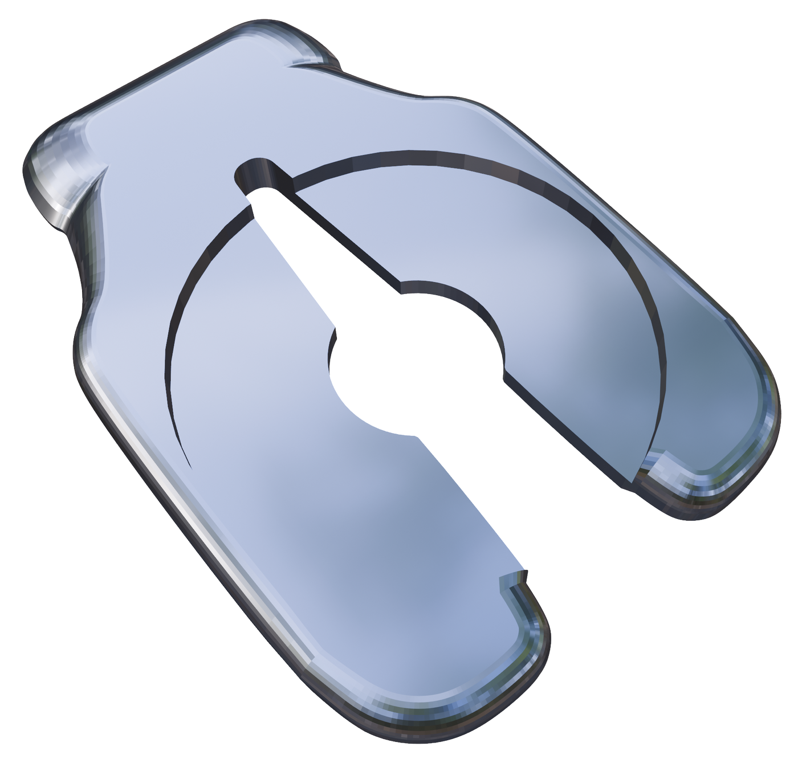
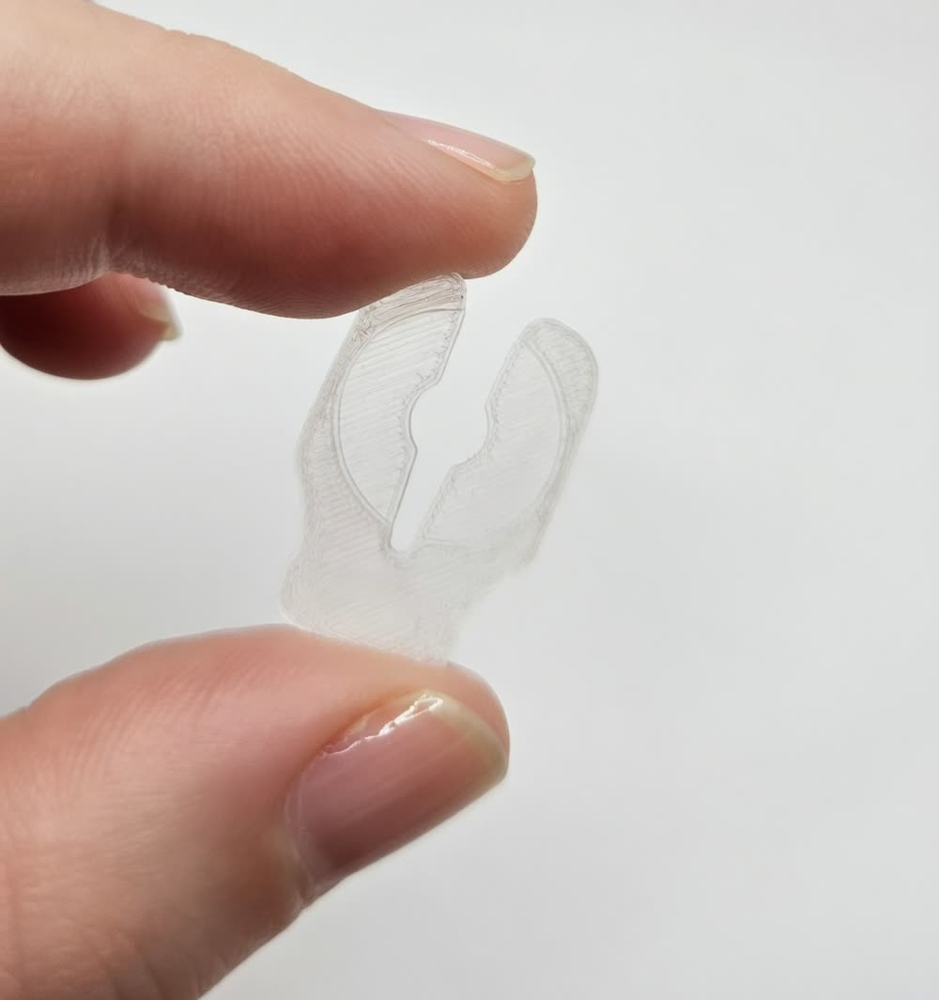
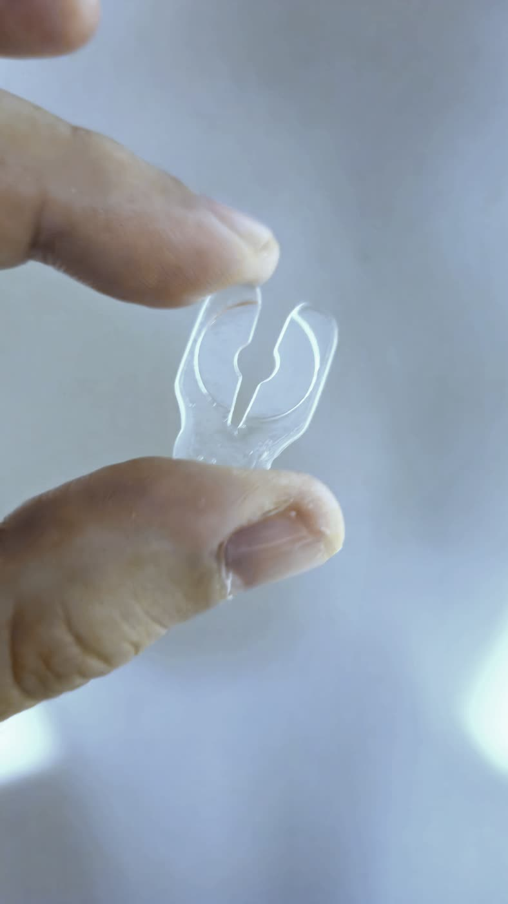

Your charms stay put.
Shoe charms have a talent for vanishing — at the playground, in the pool, somewhere between the car and the front door. A Jibclip slides in behind the charm and holds it there. That's the whole idea.
Handmade in the USA · Free shipping on U.S. orders

One small part, one stubborn job
-
A dip, not a squeeze
The patent-pending dip cradles the charm's post and locks both the charm and the clip in place — no stretching, no adhesive, nothing that wears out after a month.
-
You won't feel it
The clip sits inside the shoe with curved edges all the way around, so there's no hard corner pressing into your foot.
-
On and off in seconds
Swapping charms is half the fun. Jibclips come out as easily as they go in, so nothing about this is permanent.
Three seconds, no tools
- Push the charm through the hole in your shoe, the same way you always have.
- Slide the Jibclip on from inside the shoe, under the base of the charm.
- Press until it seats. That's it — the charm is staying where you put it.
One person, one small shop
Every Jibclip is molded from UV resin and finished by hand at Mad 3D Shop. Orders ship the next business day, packed at the same bench where they were made.
Smaller than you'd think


Will it fit my charms?
Jibclips work with any shoe charm that has a center post — including genuine Crocs® shoes and Jibbitz® charms. Got something unusual? Message the shop before you order and we'll sort it out.
Grab a pack
Packs of 5, 10, and 20. Free shipping on U.S. orders, out the door the next business day.
Shop on Etsy